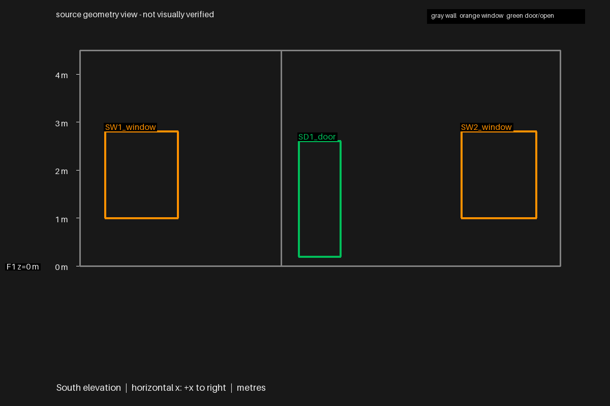
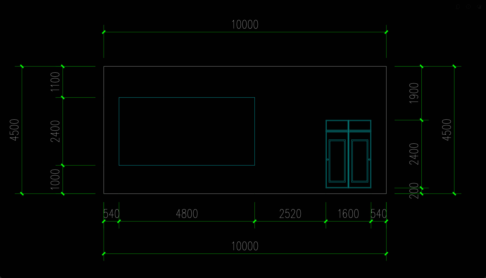
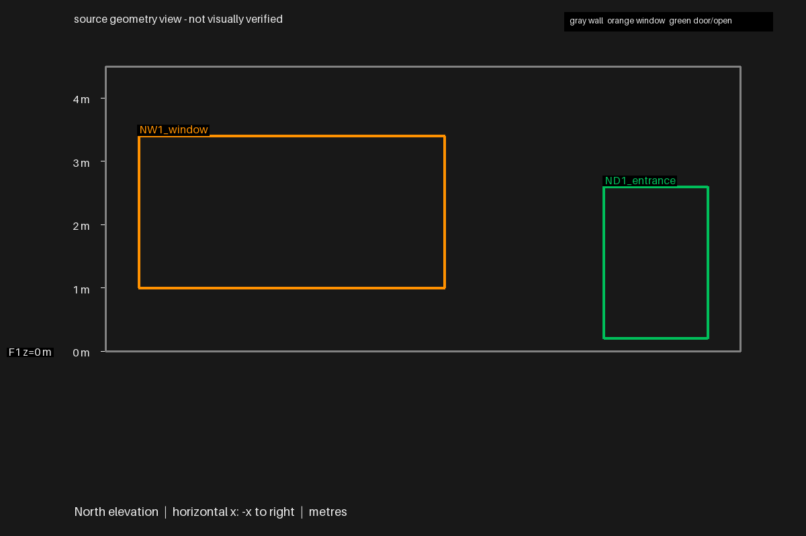
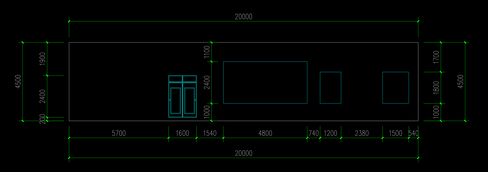
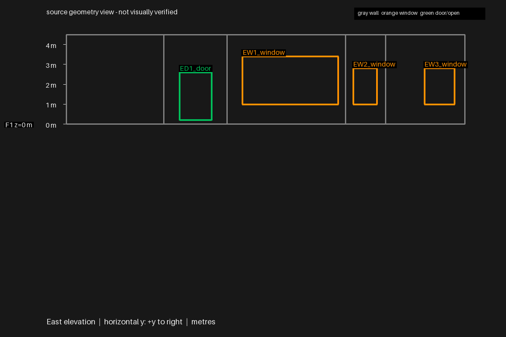
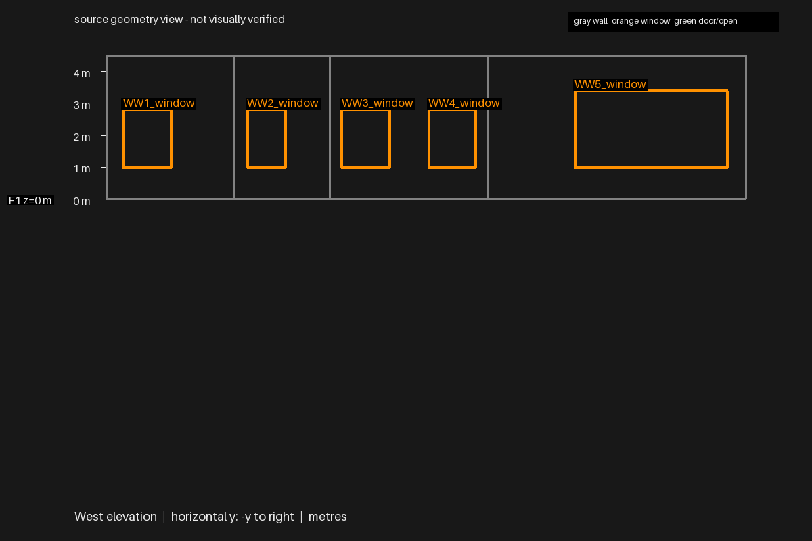

三外门底/顶由0/2.4m修正为0.2/2.6m；西侧四短窗顶由3.4m修正为2.8m。全部14个可比外开口高度与独立参照一致，8空间/11窗/10门及原平面和连接保持。数厘米墙位偏差、内门高度假设和部分依据解释缺陷仍保留，整楼尚未验收。
从已恢复东南房间的墙网局部续修，Sonnet运行665.27秒。开发指定外开口高度范围，生成时无GT或正确数值。
旋转查看模型 · 过程与边界 · 改动核验 · 生成后独立对照
| 立面 | 开口 | 此前 | 当前 | 独立参照 | 最大高度差 |
|---|---|---|---|---|---|
| East | ED1_door | 0.000 / 2.400 | 0.200 / 2.600 | 0.200 / 2.600 | 0.000011 |
| North | ND1_entrance | 0.000 / 2.400 | 0.200 / 2.600 | 0.200 / 2.600 | 0.000011 |
| South | SD1_door | 0.000 / 2.400 | 0.200 / 2.600 | 0.200 / 2.600 | 0.000011 |
| East | EW1_window | 1.000 / 3.400 | 1.000 / 3.400 | 1.000 / 3.400 | 0.000011 |
| East | EW2_window | 1.000 / 2.800 | 1.000 / 2.800 | 1.000 / 2.800 | 0.000011 |
| East | EW3_window | 1.000 / 2.800 | 1.000 / 2.800 | 1.000 / 2.800 | 0.000011 |
| North | NW1_window | 1.000 / 3.400 | 1.000 / 3.400 | 1.000 / 3.400 | 0.000011 |
| South | SW1_window | 1.000 / 2.800 | 1.000 / 2.800 | 1.000 / 2.800 | 0.000011 |
| South | SW2_window | 1.000 / 2.800 | 1.000 / 2.800 | 1.000 / 2.800 | 0.000011 |
| West | WW5_window | 1.000 / 3.400 | 1.000 / 3.400 | 1.000 / 3.400 | 0.000011 |
| West | WW4_window | 1.000 / 3.400 | 1.000 / 2.800 | 1.000 / 2.800 | 0.000011 |
| West | WW3_window | 1.000 / 3.400 | 1.000 / 2.800 | 1.000 / 2.800 | 0.000011 |
| West | WW2_window | 1.000 / 3.400 | 1.000 / 2.800 | 1.000 / 2.800 | 0.000011 |
| West | WW1_window | 1.000 / 3.400 | 1.000 / 2.800 | 1.000 / 2.800 | 0.000011 |
下图源立面按各面轴向绘制（方向见图下方），按开口身份与原立面对应。高度对照不认证平面分区、内门高度或细部构造。







评测仅在生成结束后执行。平面沿用原图总长支持的[0,20,0]平移，没有拟合GT或回写源模型；其他墙位偏差继续保留。